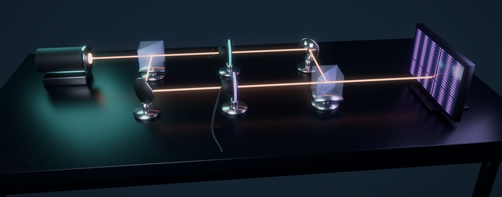
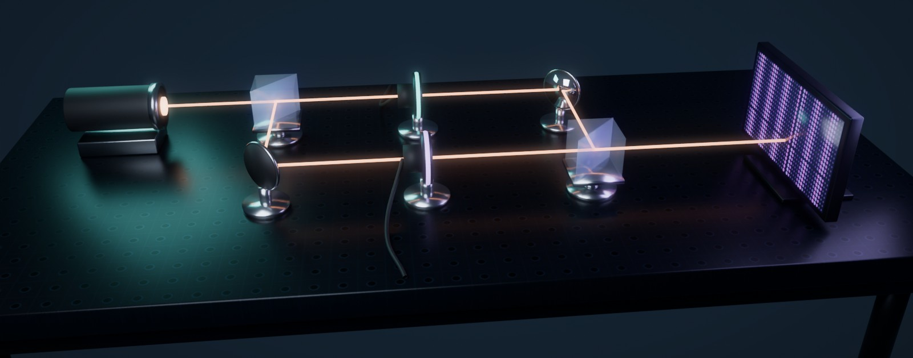
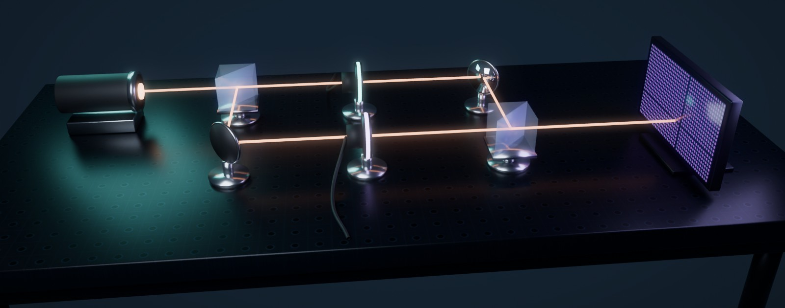

Фотон бір мезгілде толқын да, бөлшек те бола ала ма? Мұны виртуалды интерферометр арқылы қадам-қадаммен көреміз.
Фотон қай жолмен өткенін қаншалықты көбірек білсек, экрандағы жолақтар соншалықты солғын болады. Екеуін бірдей толық біле алмаймыз.
Құрылғы: көз → бөлгіш → екі жол (айналар мен детекторлар) → біріктіргіш → экран. Әр қадамда экранда не болатынын қара.

Фотон екі жолмен де бірдей өтеді. Экранға түскен нүктелер жиналып, жолақтар (интерференция) пайда болады.

Детектор жолды білуге бастайды. Фотондар түске боялады, жолақтар солғындай береді.

Әр фотон бір ғана жолмен өтеді. Экрандағы нүктелер біркелкі таралады, интерференция жоқ.
Үш қадамның барлығы 15 секундта, Blender-де жасалған 3D анимация (алдыңғы нұсқа).
Өзің сынап көр: детектор күшін өзгертіп, экрандағы жолақтар қалай солғындайтынын қара. Фотондар жолмен ұшады, детектор жолды «біледі». Тінтуірмен айналдыр, төмендегі батырмалармен камераны ауыстыр.